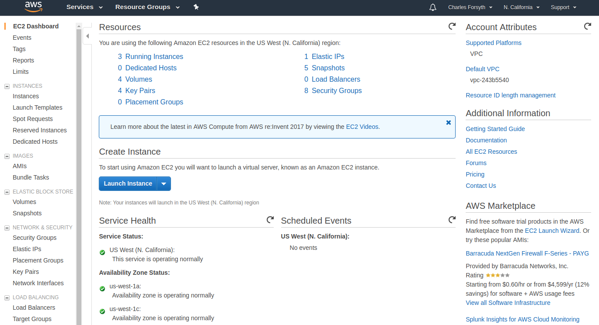
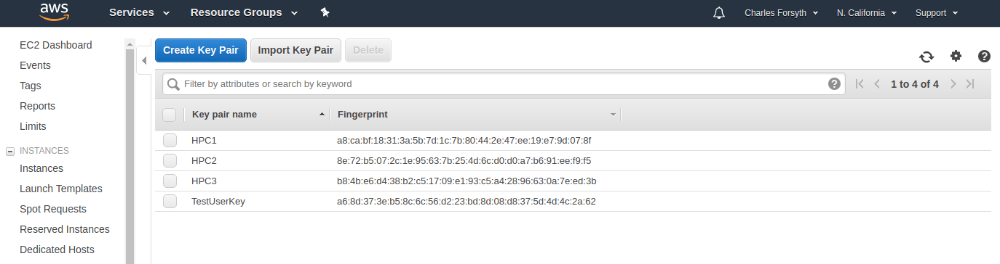
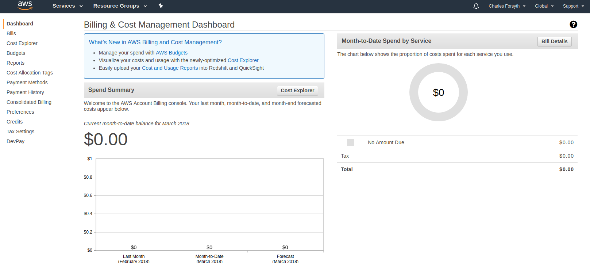
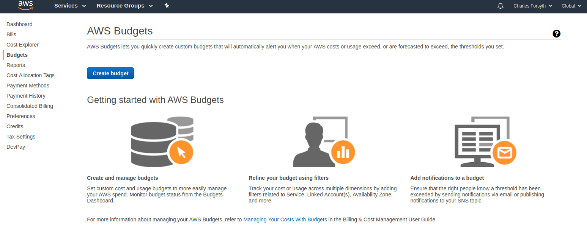

HPCC AWS Cluster manual
The 2018 user manual for the HPCC Cloud Service: intro, AWS account setup, the data egress waiver, cluster setup and operation, and billing and budget alerts.
aws-cluster-manual/Portfolio · UC Riverside HPCC · 2017 to 2019
Lead HPC administrator, High Performance Computing Center, UC Riverside.
The work preserved here: the HPCC AWS Cluster (HPCC Cloud Service), which let a lab launch its own private HPC cluster in AWS from the HPCC cluster with hpcc_cloud, a cfnCluster wrapper; 57 environment modules for the cluster's software stack; and the files from the Introduction to Python workshop. Every file is my own, and each 2017-2019 commit keeps its original date and message.
$ hpcc_cloud create new-cluster
Beginning cluster creation for cluster: new-cluster
Creating stack named: cfncluster-new-cluster
Status: cfncluster-new-cluster - CREATE_COMPLETE
Output:"MasterPublicIP"="<MasterPublicIP>"
Output:"MasterPrivateIP"="<MasterPrivateIP>"
Output:"GangliaPublicURL"="http://<MasterPublicIP>/ganglia/"
Output:"GangliaPrivateURL"="http://<MasterPrivateIP>/ganglia/"Addresses replaced with placeholders.
01 / What's here
The repository is a portfolio of the files I wrote for UCR HPCC. Where others later edited a file, it keeps my last version before those edits.
The 2018 user manual for the HPCC Cloud Service: intro, AWS account setup, the data egress waiver, cluster setup and operation, and billing and budget alerts.
aws-cluster-manual/hpcc_cloud on cfnClusterLabs created, checked, listed and deleted their own clusters with one command each. The cfncluster module (1.3, then 1.4) loaded the tool from a Python virtual environment.
57 module folders for the HPCC software stack, 2017-2019: CUDA and cuDNN, TensorFlow GPU, BUSCO, GATK, SPAdes, Trinity, RAxML-NG, Gaussian, Rosetta and more.
environment-modules/The start of a separate module repository for software on the AWS clusters HPCC supported (2018).
aws-cluster-modules/18 example files for the HPCC Introduction to Python workshop (Oct 2018), from variable types through submitting a Python script to Slurm.
python-intro-workshop/Quantum ESPRESSO submission scripts for the OpenMPI and Intel builds, with an example input file (2019).
slurm-examples/02 / HPCC Cloud Service
A lab-private HPC cluster in AWS, created on demand from the HPCC cluster. The manual's pitch, in its own terms:
sbatch, squeue).Lab AWS account
Master account + IAM users
Access key, EC2 key pair, budget alert. Covered by the UC-wide AWS agreement.
HPCC cluster
hpcc_cloud
configure, create, status, list, delete; wraps cfnCluster, loaded by the cfncluster module.
AWS, us-west-1
Stack cfncluster-<name>
Master node plus auto-scaling compute nodes, Slurm scheduler, Ganglia monitoring URL.
Researcher
ssh / scp as centos
Upload inputs, sbatch, squeue, download results, delete the cluster.
From the lab's master AWS account, open IAM and add a user for cluster work (programmatic access is all a lab member needs), assign it to a group, and download the credentials CSV with the access key ID and secret key. Then, in the EC2 console for N. California, create a key pair named for the user and save the key file. Send both files to the user privately.
A UC-wide AWS agreement provides a data egress fee waiver of up to 15% of total monthly AWS fees. It applies to UC accounts except commercial web hosting, media streaming and MOOCs, and requires 80%+ of egress over an approved research network such as CENIC or Internet2, which normal UC usage meets. The manual walks through connecting the account to the agreement and a purchase order.
hpcc_cloud on the HPCC clusterLog in to the HPCC cluster and run the configure step. It prompts for the cluster template (default), the AWS access key and secret, region us-west-1, VPC name (default public), and then offers lists to choose the key name, VPC ID, master subnet and IAM user.
hpcc_cloud configureCreation builds a CloudFormation stack and prints the master node's public IP, used for every ssh and scp afterwards.
hpcc_cloud create <NameForYourCluster>
hpcc_cloud status <NameForYourCluster>
hpcc_cloud listscp -i /path/to/your/key-file.pem <local-files-to-copy> centos@<MasterPublicIP>:.
ssh -i /path/to/your/key-file.pem centos@<MasterPublicIP>
sbatch slurm-submission-script.sh
squeueResults are pulled back from the HPCC cluster; deleting the cluster stops the node charges.
scp -i /path/to/your/key-file.pem centos@<MasterPublicIP>:./<results-to-download> .
hpcc_cloud delete new-clusterNode time and storage are the two biggest costs, so the manual advises moving only the data you need and deleting clusters when idle. Its worked example: about $0.43 per hour for the default configuration (one head node and one 8-core compute node with 16 GB RAM, no spot pricing, 25 GB of data). Billing is monthly to a purchase order, and a budget alert set at $50 a month warns when projected spend would exceed it.
03 / Screenshots
Original AWS console screenshots from the manual.




04 / Environment modules
Tcl modulefiles written for the HPCC cluster, 2017-2019: 57 package folders holding 66 versioned modulefiles (casm and gmt hold build notes only). Larger tags have more versions; every tag links to its folder.
tensorflow-gpu/1.0 runs module load cuda/8.0 and module load cuDNN/5.1, then activates its Python environment, so one command gives a working GPU stack.
RevBayes ships as 1.0.11, 1.0.11-mpi and 1.0.11-container (Singularity); Quantum ESPRESSO as 6.3 and 6.3_intel; .version files set the defaults.
hpcc_utils puts a shared bin of HPCC admin tools on the path, and cfncluster activates the virtual environment behind the AWS cluster service.
05 / Training
Example scripts taught in October 2018, one file per idea, ending with a Python script that carries its own Slurm directives and is submitted with sbatch.
#!/usr/bin/env python
#SBATCH --ntasks=6
#SBATCH --time=02:00:00
#SBATCH --mem=100g
#SBATCH --output=output-simple-%j.out
#SBATCH -p short,batch,intel
import os
import random
import json#!/bin/bash -l
#SBATCH --nodes=1
#SBATCH --ntasks=6
#SBATCH --mem-per-cpu=1G
export OMP_NUM_THREADS=1
module load espresso/6.3
mpirun pw.x -in input_file.in >& output_file.outThe Python workshop was one of 19 HPCC workshop sessions I taught between 2017 and 2019. The slide decks are collected in the training archive.
Open the training archive06 / Timeline
Commits per month from the repository history (43 in 2017, 69 in 2018, 31 in 2019).
cfncluster module added, with notes on installing cfnCluster in a virtual environment.hpcc_utils module for HPCC admin tools.07 / Links
Host names in the manual are historical and may no longer resolve. The code and docs were created for UCR HPCC; no license is granted beyond viewing.